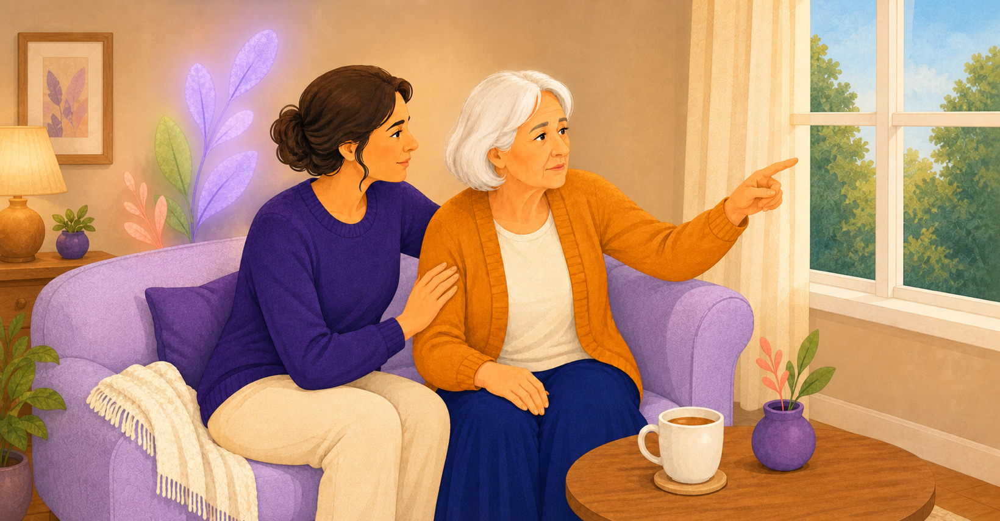
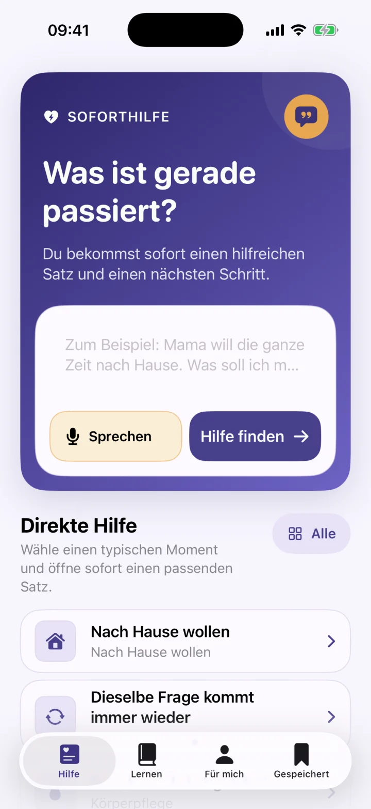
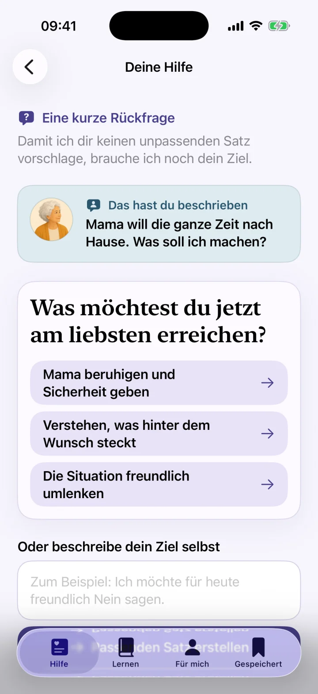
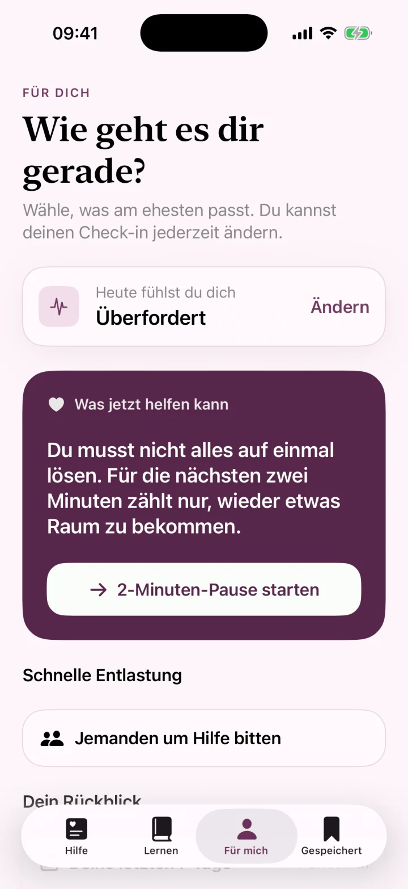

1 – Der Moment
„Ich muss nach Hause!“
Obwohl sie bereits zu Hause ist.
Demenz Coach hilft dir in schwierigen Momenten mit passenden Worten, konkreten Handlungstipps und Ideen für den Alltag.
Entwickelt aus Pflegepraxis und validierender Kommunikation.

Bleib einen Moment bei ihr und finde heraus, was ihr gerade Sicherheit geben könnte.
Passende Worte
Konkrete Handlungstipps
Ideen für den Alltag
Demenz verändert Kommunikation und Alltag. Was früher selbstverständlich war, kann plötzlich zu Streit, Angst oder Überforderung führen. Und oft bleibt nur die Frage: Was sage ich? Was tue ich? Was brauche ich selbst gerade?
„Was sage ich stattdessen?“
„Was tue ich als Nächstes?“
„Welche Hilfe brauche ich selbst gerade?“
Obwohl sie bereits zu Hause ist.
Gut gemeint. Aber manchmal führt die Korrektur zu noch mehr Unruhe.
Nicht gegen die Wahrnehmung kämpfen. Erst verstehen, was dahinterstehen könnte.
Du musst nicht erst den passenden Ratgeber finden. Beschreibe, was gerade passiert, und prüfe eine kurze Antwort für diesen Moment.
Das Beispiel stammt aus der aktuellen App. Vorschläge können unpassend oder fehlerhaft sein und ersetzen keine medizinische oder pflegerische Beratung.
„Mama will die ganze Zeit nach Hause. Was soll ich machen?“
„Du vermisst dein Zuhause. Erzähl mir, was dort besonders schön war.“
Biete etwas Vertrautes an, zum Beispiel Tee, ruhige Musik oder ein Fotoalbum.
Echte App-EinblickeUnveränderte Bildschirmansichten
Quellenbasierte RatgeberKostenlos und ohne App-Zwang
Datenschutz vor AnalyseMessung nur nach Einwilligung
Unveränderte Screenshots aus der deutschen iPhone-App – von der Situation bis zum persönlichen Lernplan.




Keine langen Ratgeber. Kein stundenlanges Suchen.
Schreib oder sprich die Situation einfach so, wie du sie erlebst.
Der Coach schlägt dir eine kurze, respektvolle Reaktion vor.
Du bekommst Handlungstipps, Ideen für Alltagshilfsmittel und eine kurze Erklärung, was hinter dem Verhalten stecken könnte.
Manche Situationen brauchen vor allem den richtigen Satz. Andere brauchen eine konkrete Idee – oder ein einfaches Hilfsmittel, das den Alltag leichter macht.
Schritt-für-Schritt-Anregungen, die du direkt umsetzen kannst – von der Abendroutine bis zum Umgang mit Widerstand.
Entdecke einfache Hilfsmittel und Methoden, die Sicherheit geben können: Nachtlichter, Orientierungshilfen, Musik, Erinnerungsstützen und mehr.
Weil pflegende Angehörige oft selbst erschöpft sind, gibt der Coach auch Tipps, wie du dich unterstützen und Entlastung finden kannst.
Wenn der vertraute Ort nicht mehr erkannt wird.
Wenn nach Menschen gefragt wird, die verstorben sind.
Wenn Verlegtes zu einem Vorwurf wird.
Wenn frühere Pflichten plötzlich wieder drängen.
Wenn Körperpflege Scham oder Angst auslöst.
Wenn Erinnerung und Bedürfnis auseinandergehen.
Denn Demenz ist persönlich. Und gute Begleitung sollte es auch sein.
Der Coach berücksichtigt die Situation und mögliche Bedürfnisse wie Sicherheit, Verantwortung oder Gewohnheit.
Der Coach weiß beispielsweise:
Dann kann die Unterstützung stärker an die bekannte Lebensgeschichte und vertraute Rollen anschließen.
Was Sicherheit gibt, hängt oft davon ab, wer dieser Mensch sein Leben lang war.
Persönlichen Coach einrichten Biografische Informationen werden nur verwendet, wenn sie tatsächlich hinterlegt wurden. Die App erfindet nichts über die Person.Sag ihm, dass heute alles erledigt ist, und begleite ihn zurück in seine Abendroutine.
Entwickelt von einer examinierten Altenpflegerin mit Praxiserfahrung in der Begleitung von Menschen mit Demenz.
Entwickelt mit Erfahrung in validierender und personzentrierter Kommunikation bei Demenz.
Nicht als Fachbuch, sondern als konkrete Unterstützung im Alltag – mit Worten, Handlungstipps und Ideen für Alltagshilfsmittel.
Wenn Hinweise auf Schmerzen, akute Erkrankung oder Gefahr bestehen, weist die App auf notwendige medizinische oder professionelle Hilfe hin.
„Ich habe selbst als examinierte Altenpflegerin mit Menschen mit Demenz gearbeitet. Dabei habe ich immer wieder erlebt, wie viel ein einzelner Satz verändern kann – und wie schwer es gleichzeitig ist, im belastenden Moment auf das richtige Wissen zuzugreifen.
Deshalb habe ich Demenz Coach entwickelt: damit Angehörige genau dann Unterstützung bekommen, wenn sie sie brauchen.“
Platzhalter für eine echte Nutzerstimme
Platzhalter für eine echte Nutzerstimme
Platzhalter für eine echte Nutzerstimme
Demenz Coach unterstützt bei Kommunikation, Alltagssituationen und der Integration von Alltagshilfsmitteln. Die App ersetzt keine medizinische Diagnose, Notfallhilfe oder individuelle ärztliche oder pflegerische Beratung.
Kurze, quellenbasierte Antworten zuerst – die App ist ein optionaler nächster Schritt.
Vier ruhige Schritte und mögliche Formulierungen für schwierige Gespräche.
Ratgeber lesenWas du sagen kannst, ohne über den Ort oder Erinnerungen zu streiten.
Ratgeber lesenEin kurzer Sicherheits- und Entlastungsplan für pflegende Angehörige.
Ratgeber lesenDu musst nicht immer sofort die perfekte Antwort wissen. Manchmal reicht ein ruhiger Satz und ein kleiner nächster Schritt.
Die Haltung hinter Demenz Coach
Demenz Coach ist bewusst einfach gehalten und unterstützt Angehörige bei Kommunikation und Orientierung.
Nein. Demenz Coach ist ein Kommunikations- und Angehörigen-Coach. Die App stellt keine Diagnosen und gibt keine Empfehlungen zu Medikamenten.
Ja. Hilfreiche Sätze kannst du merken und später schnell wiederfinden.
Nein. Bei unmittelbarer Gefahr oder einem medizinischen Notfall wende dich bitte sofort an die örtliche Notfallhilfe.
Demenz Coach gibt dir einen Satz, einen nächsten Schritt und praktische Ideen für den Alltag.
Demenz Coach herunterladen Für iPhone verfügbar. Kostenlos herunterladen.